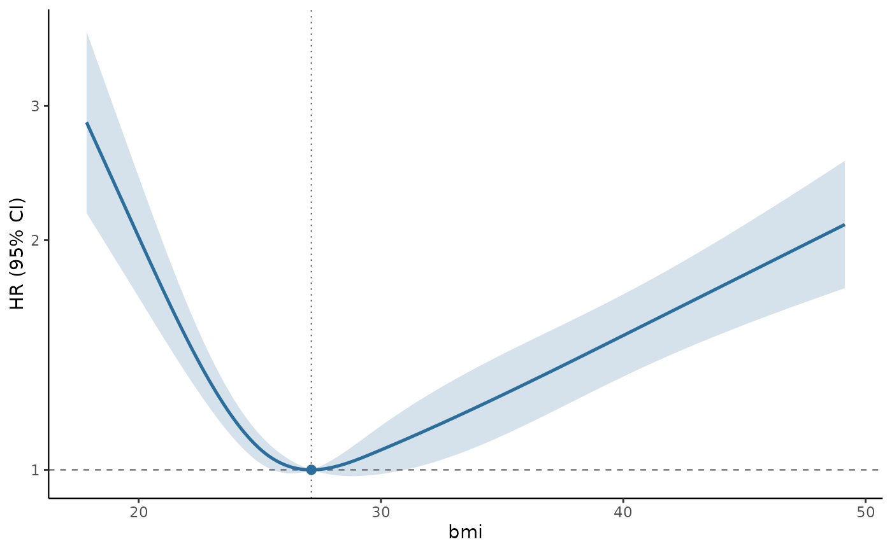
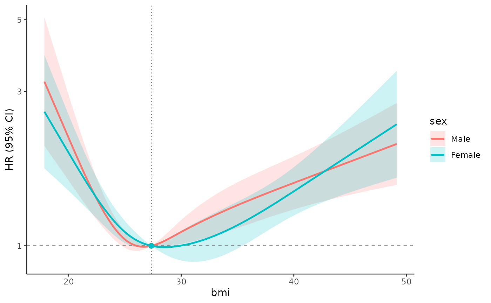

Fits a restricted cubic spline model to a complex survey design and returns the exposure-response curve, its confidence band, tests of overall association and of non-linearity, and the reference value the curve is anchored to.
Usage
svyrcs(
formula,
design,
family = NULL,
ref = "median",
ref_prob = 0.5,
weighted_knots = TRUE,
n = 200,
range = NULL,
level = 0.95,
df = NULL,
...
)Arguments
- formula
A model formula containing exactly one
rcs()term for the exposure, plus any covariates. ASurv()response selects a survey-weighted Cox model; anything else is fitted withsurvey::svyglm(). Crossing the spline with a grouping variable,rcs(x, 4) * sex, estimates one curve per group and tests whether they differ; see the section below.- design
A survey design object, as built by
survey::svydesign(). Subset it withsubset()before passing it in; the degrees of freedom are taken from the design you pass. A multiply imputed design, built by passing amitools::imputationList()tosurvey::svydesign(), is also accepted; see the section below.- family
Family for the
survey::svyglm()path. Usequasibinomial()for a binary outcome (odds ratios),quasipoisson()for counts or rates (rate ratios), or the defaultgaussian()for a continuous outcome (mean differences). Ignored for Cox models.- ref
Reference value the curve is anchored to: a number, or one of
"median"(default),"mean","quantile","min"or"max". See references.- ref_prob
Probability used when
ref = "quantile".- weighted_knots
If
TRUE(default), a knot count is turned into knot locations using survey-weighted quantiles of the exposure, so knot placement reflects the population rather than the unweighted sample. Set toFALSEfor unweighted quantiles. Explicit knot locations are always used as given.- n
Number of points on the estimated curve.
- range
Length-2 numeric giving the exposure range to estimate over. Defaults to the 1st and 99th survey-weighted percentiles.
- level
Confidence level for the band.
- df
Denominator degrees of freedom for the confidence band and the tests.
NULL(default) usessurvey::degf(design); a number substitutes it;Infgives normal-quantile intervals and chi-square-equivalent tests. Under multiple imputation this is the complete-data degrees of freedom that the Barnard-Rubin correction starts from.- ...
Passed on to
survey::svycoxph()orsurvey::svyglm().subsetis refused: it would be applied after the knots and the reference had already been derived, so subset the design instead, withsubset(design, ...).
Value
An object of class svyrcs, a list with components:
- curve
Data frame of
x,estimate,conf.low,conf.high,se.- ref
The reference value and how it was chosen.
- knots
Knot locations actually used.
- tests
Overall and non-linearity Wald tests, as F and chi-square.
- measure
One of
"HR"(Cox),"OR"(logit link),"RR"(log link on a binomial family),"Rate ratio"(log link on a count family with an offset),"Mean ratio"(log link on a count family without one),"Ratio"(log link on any other family), or"Difference"(identity link). A non-standard link gives"<link>-scale difference".- model
The fitted
svycoxph/svyglmobject, for your own diagnostics.- degf, n, nevents, level, var, call
Analysis metadata.
Subgroups and effect modification
Writing the exposure crossed with a grouping variable, rcs(bmi, 4) * sex, fits one model and
returns one curve per level of the modifier. Because it is a single model, the covariate effects
are shared across groups and a genuine interaction test is available; fitting each subgroup
separately gives neither. sex * rcs(bmi, 4) is equivalent.
The modifier must be a factor, character or logical variable; ordered factors and other contrast codings are handled, because group curves are built from the contrast matrix rather than from level names. Two extra tests are then reported:
- Interaction
Are the spline-by-group terms jointly zero, i.e. does the association differ between groups at all?
- Shape interaction
The same test without the linear term: does the curvature differ, as opposed to the whole curve being shifted?
plus the overall and non-linearity tests within each group.
All groups share one reference value, so that the curves are comparable; ref = "min" and
ref = "max" are located on the reference level's curve, which the printed output states.
What is warned about
Some situations are legitimate but easy to enter by accident, so they warn rather than fail: evaluating the curve outside the observed exposure range, which a restricted cubic spline will do silently because it is linear beyond the outer knots; a design whose degrees of freedom cannot identify the spline, where the estimates stand but the intervals do not; and non-finite estimates from a model that did not converge. A reference value outside the observed range is refused outright instead, because it would make every estimate an extrapolation rather than the one point asked for.
Size of the returned object
fit$model keeps the fitted model, which keeps the survey design, which keeps the data. A fit on
the shipped 10,617-row design is about 9 MB, and a multiply imputed one is that again per
imputation – roughly 47 MB at m = 5. That is the price of being able to run your own
diagnostics on fit$model; drop it before saving a large batch of fits if size matters.
Multiply imputed designs
Pass a design built from a mitools::imputationList() and the model is fitted in every
imputation and combined by Rubin's rules. Knots and the reference value are computed once and
then held fixed: if each imputation chose its own knots, the coefficient vectors would not be
estimates of the same parameters and Rubin's rules would not apply.
Rubin's rules require a common parameterisation, not any particular way of arriving at one. This package averages the survey-weighted quantiles across imputations, which is a convention rather than a derivation; the average of quantiles is not in general the quantile of a pooled predictive distribution, and for strongly skewed imputations another rule could reasonably be preferred.
The curve then carries two extra columns, df and fmi: the degrees of freedom used at that
point and the fraction of missing information there.
The joint tests. The overall, non-linearity, interaction and per-group tests use D1 (Li, Raghunathan and Rubin 1991): the statistic is \(\bar{Q}' [(1 + r)\bar{U}]^{-1} \bar{Q} / k\) with \(r = (1 + 1/m)\,\mathrm{tr}(B\bar{U}^{-1})/k\), referred to an F distribution whose denominator degrees of freedom come from Reiter (2007). Reiter's correction is the one that accounts for a finite complete-data degrees of freedom, which is exactly the survey situation.
Where \(k(m-1) \le 4\) that correction is undefined – it contains \(1/(k(m-1)-4)\) – and the package warns and substitutes the complete-data degrees of freedom. That substitution is not a validated rule and should not be read as conservative: with a large fraction of missing information the complete-data value can exceed an appropriate imputation-limited denominator. Raising the number of imputations is the real fix.
On the degrees of freedom. mitools::MIcombine() reports
\((m - 1)(1 + 1/r)^2\), which is unbounded above — against the design shipped with this package,
which has 31 degrees of freedom, it returns values in the thousands or Inf. Using that for a
t quantile would give confidence intervals far too narrow. svyrcs applies the Barnard-Rubin
correction instead, which bounds the result by the complete-data degrees of freedom. It does not
reach that bound: with nothing to impute the published formula returns
\((\nu + 1)\nu / (\nu + 3)\), slightly below degf(design). The same reasoning applies to the joint
tests, whose denominator degrees of freedom are adjusted the same way rather than taken from the
Li-Raghunathan-Rubin rule, which ignores the survey design entirely.
Building the imputations is not this package's job — use mice or similar, then hand the
completed datasets over.
Which degrees of freedom
By default the confidence band and the tests use survey::degf(design), the number of primary
sampling units minus the number of strata. That is a deliberate conservative default rather than
the only defensible answer: it behaves as though every covariate varied only between PSUs, which
is right for design variables and cautious for individual-level ones. survey::regTermTest()
exposes the same choice for the same reason.
df overrides it. A larger value, or Inf for the normal approximation, gives narrower
intervals; use it deliberately and say so in the write-up, because with few PSUs the difference is
not small.
Why not just use rms
rms::rcs() gives the same basis, but rms fitting functions do not know about sampling weights,
clustering or stratification, and survey has no spline helper. svyrcs bridges the two: the
spline is fitted inside a survey model, so point estimates use the weights and the confidence
band uses the variance estimator the design implies – Taylor linearisation for an ordinary
design, replicate-weight variance for a replicate design.
See also
svyrcs_curve() for curves from a model you fitted yourself, rcs() for the basis,
references for reference values.
Examples
design <- survey::svydesign(
id = ~psu, strata = ~strata, weights = ~weight,
nest = TRUE, data = nhanes_bmi
)
# continuous outcome: mean difference in total cholesterol across the BMI range
fit <- svyrcs(tchol ~ rcs(bmi, 4) + age + sex, design = design)
fit
#> Restricted cubic spline on a complex survey design
#>
#> Model survey-weighted GLM (gaussian, identity link)
#> Outcome tchol
#> Exposure bmi, 4 knots at 19.85, 25.27, 29.71, 40.65 (weighted quantiles)
#> Sample 9,968 observations, 31 design df
#> Reference bmi = 27.37 (weighted median), Difference = 0
#> Dropped 649 rows with missing values
#>
#> Overall association F = 39.86 on 3 and 31 df, p = 9.36e-11
#> Non-linearity F = 55.21 on 2 and 31 df, p = 6.07e-11
# survival outcome: all-cause mortality, anchored at the minimum-risk BMI
# \donttest{
library(survival)
fit_hr <- svyrcs(Surv(time, event) ~ rcs(bmi, 4) + age + sex,
design = design, ref = "min")
summary(fit_hr)
#> Restricted cubic spline on a complex survey design
#>
#> Model survey-weighted Cox proportional hazards
#> Outcome Surv(time, event)
#> Exposure bmi, 4 knots at 19.78, 25.22, 29.71, 40.67 (weighted quantiles)
#> Sample 10,617 observations, 1,893 events, 31 design df
#> Reference bmi = 27.13 (minimum-risk point), HR = 1
#> selected from these data; its own uncertainty is not in the band
#>
#> Overall association F = 48.07 on 3 and 31 df, p = 9.1e-12
#> Non-linearity F = 56.15 on 2 and 31 df, p = 4.95e-11
#>
#> Curve shape
#> Grid lowest bmi = 27.13, HR = 1.00 (1.00, 1.00)
#> Grid highest bmi = 17.85, HR = 2.85 (2.17, 3.75)
#> Pointwise 95% band excludes HR = 1 over:
#> bmi 17.85 to 25.40 (HR > 1)
#> bmi 31.06 to 49.14 (HR > 1)
plot(fit_hr)

# binary outcome: odds of high total cholesterol
fit_or <- svyrcs(high_chol ~ rcs(bmi, 4) + age + sex, design = design,
family = quasibinomial())
# one curve per subgroup, with a test of whether they differ
fit_by_sex <- svyrcs(Surv(time, event) ~ rcs(bmi, 4) * sex + age, design = design)
fit_by_sex$tests$interaction$p_F
#> [1] 0.4796278
plot(fit_by_sex)

# }